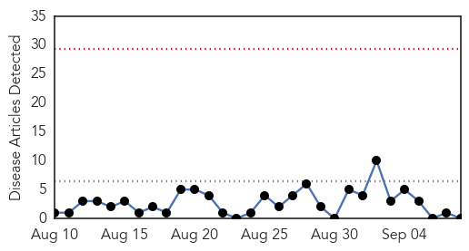
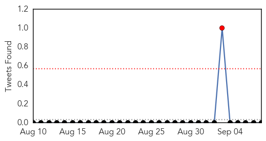
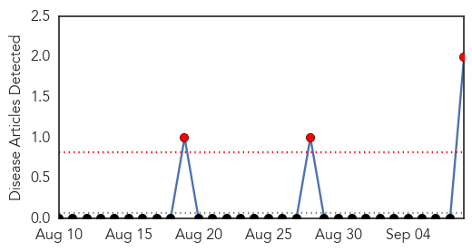
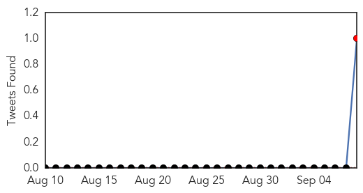
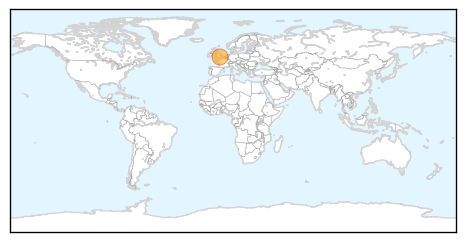
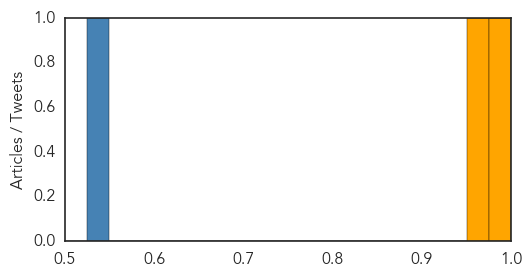

Hepatitis
30-Day Web Trend
0 alerts, 0 warnings

30-Day Twitter Trend
1 alerts, 0 warnings

Article Locations

Article Confidences

Top Articles:
-
No articles found for Sep 08, 2015
Top Tweets:
-
No tweets found for Sep 08, 2015
Yellow Fever
30-Day Web Trend
3 alerts, 0 warnings

30-Day Twitter Trend
1 alerts, 0 warnings

Article Locations
Article Confidences
Top Articles:
Top Tweets:
- 0.528
- Flavivirus news: Drug to fight ebola flu and yellow fever - New Zealand Herald: The Independen... http://t.co/Hw2SplqcSb pathogenposse